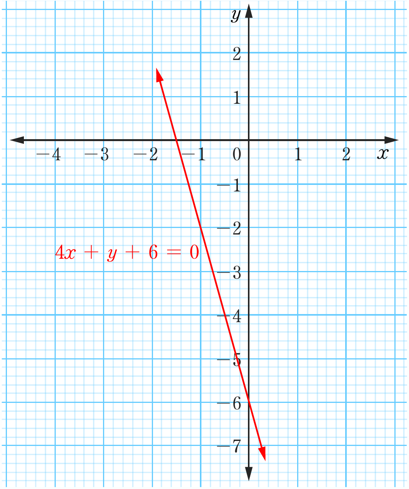

31.

33. (a) Gradient = 3, y-intercept is (0, -12)
(b) Gradient = , y-intercept is
(c) Gradient = , y-intercept is
(d) Gradient = , y-intercept is
35.
Coordinate graph with a red straight line for 4x + y + 6 = 0, descending from upper left to lower right and crossing the y-axis at -6.